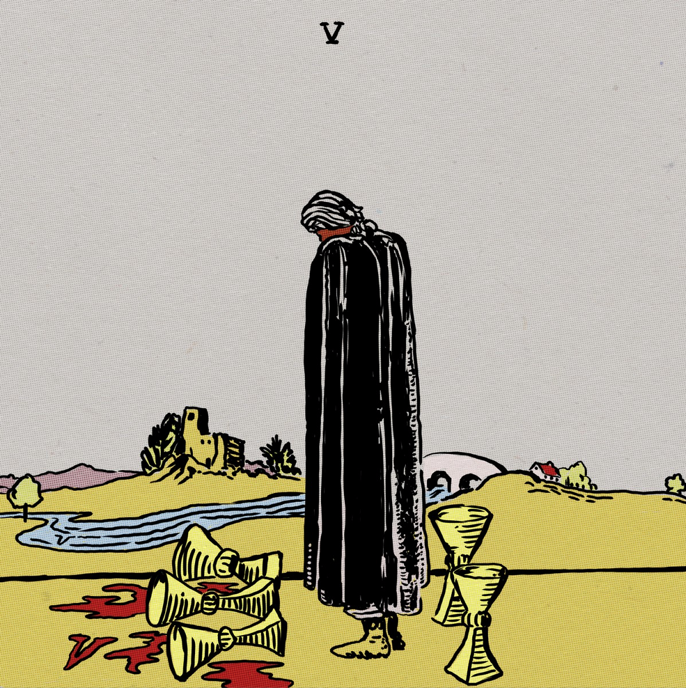

Listening Now - Wavves: V
10/04/15 Wavves new album V is the perfect soundtrack to get work done. The album has chill upbeat melodies to set your mind right for whatever the task.
ListenWavves new album V is the perfect soundtrack to get work done. The album has chill upbeat melodies to set your mind right for whatever the task.
ListenFrom your daily todo list to organzing your ideas for your next site Wunderlist does it all. The interface is clean and it also has fun kitten backgrounds for your workspace. Lists can also be shared with other Wunderlist users for easy collaboration on projects. I recently used this with a friend to jot down ideas we thought of of a site I am helping build.
WunderlistFind me on Github and Twitter @mlunalover.